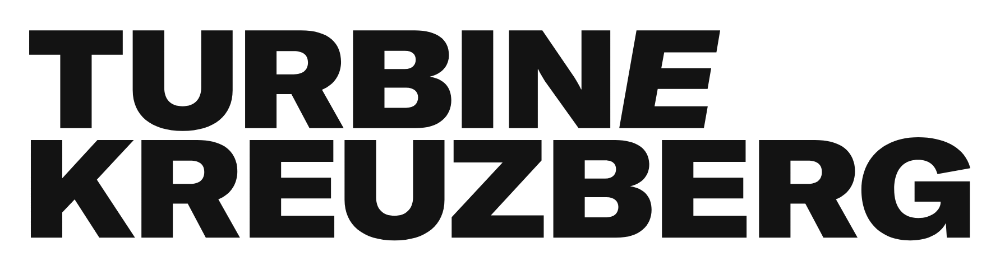

Analog Release
This analog release of Composer 1.8.0 is a limited edition
and exclusively built for the joint X-Mas Meetup on 12/19/2018
Symfony User Group Berlin - Coding Berlin
Berlin PHP Usergroup - Mayflower Usergroup
This build and event is proudly sponsored and produced by
